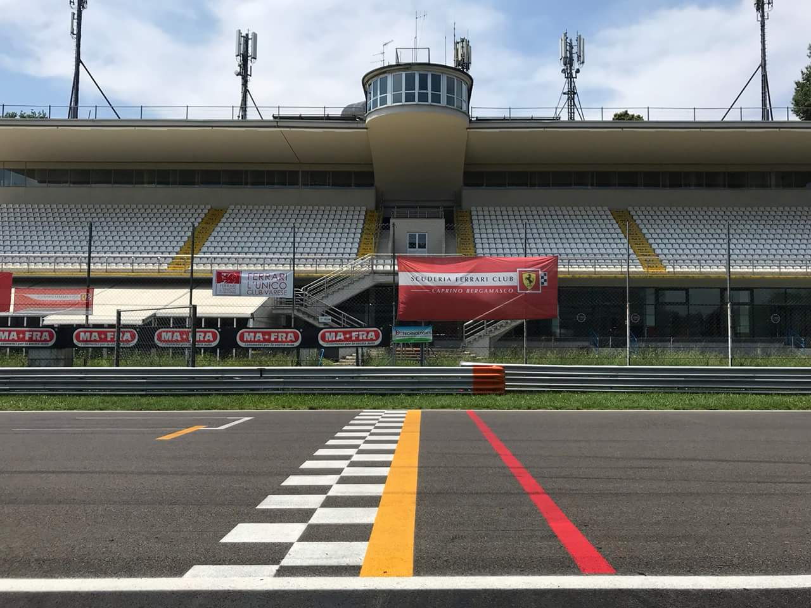

Poucos lugares representam a principal categoria do automobilismo com tanta força quanto Monza. O GP da Itália de 2026 leva o campeonato novamente ao circuito localizado nos arredores de Milão para um fim de semana que reúne história, velocidades extremas, paixão dos tifosi e um momento importante na disputa pelo título.
A corrida será realizada no domingo, 6 de setembro, e o fim de semana terá o formato tradicional da Fórmula 1, sem Sprint: três sessões de treinos livres, classificação no sábado e o Grande Prêmio no domingo. Monza tem 5,793 quilômetros, e a prova está programada para 53 voltas, totalizando 306,72 quilômetros.
A edição de 2026 ganha um ingrediente adicional. É a primeira temporada do novo regulamento técnico da Fórmula 1, com mudanças profundas em aerodinâmica e unidades de potência. Em uma pista na qual eficiência, velocidade de reta e gerenciamento de energia são fundamentais, Monza funciona como um dos testes mais interessantes para entender o comportamento dessa geração de carros.
Cronograma do final de semana
O GP da Itália será disputado entre sexta-feira, 4 de setembro, e domingo, 6 de setembro. A corrida faz parte da sequência europeia do campeonato e aparece como a 13ª etapa da temporada no calendário oficial atualizado da Fórmula 1.
Quem acompanha toda a temporada pode consultar também o calendário de 2026, com a distribuição das etapas ao longo do ano.
Os horários abaixo estão no fuso de Brasília:
Sexta-feira, 4 de setembro
- Treino livre 1 — 7h30
- Treino livre 2 — 11h
Sábado, 5 de setembro
- Treino livre 3 — 7h30
- Classificação — 11h
Domingo, 6 de setembro
- Corrida — 10h
Onde assistir ao GP da Itália de Fórmula 1 2026
No Brasil, a Fórmula 1 voltou ao Grupo Globo em 2026. O acordo de transmissão prevê cobertura pela TV Globo, sportv e plataformas digitais da empresa, com o sportv exibindo as sessões do campeonato. O GP da Itália está entre as corridas selecionadas para transmissão ao vivo pela TV Globo em 2026.
Monza: o circuito chamado de Templo da Velocidade
O Autódromo Nacional de Monza é um dos circuitos fundamentais para entender a história da Fórmula 1. Construído em apenas 110 dias em 1922, tornou-se o terceiro autódromo permanente construído especificamente para competições automobilísticas no mundo, depois de Brooklands, no Reino Unido, e Indianapolis, nos Estados Unidos.
Monza integrou a primeira temporada do Mundial de Fórmula 1, em 1950. Desde então, recebeu o GP da Itália em todas as edições do campeonato com apenas uma exceção: em 1980, a prova italiana foi disputada em Ímola.
A configuração atual combina longas retas, freadas violentas e curvas que exigem estabilidade do carro em alta velocidade. Os pilotos passam aproximadamente 80% da volta com o acelerador totalmente aberto. A reta principal tem cerca de 1,1 quilômetro, e a primeira chicane é precedida por uma das maiores zonas de frenagem do calendário.
Isso explica por que as equipes normalmente procuram configurações de baixa resistência aerodinâmica em Monza. Ganhar velocidade nas retas é essencial, mas simplesmente retirar carga aerodinâmica do carro pode comprometer a estabilidade nas frenagens e tração nas saídas das chicanes.
Entre os pontos mais tradicionais de Monza estão algumas curvas que fazem parte da própria história da Fórmula 1. Depois da primeira chicane, os carros passam pela Curva Biassono, durante décadas conhecida simplesmente como Curva Grande, antes de chegar à Variante della Roggia. Na sequência aparecem as duas curvas de Lesmo, cercadas pela área arborizada do autódromo, antes da longa aceleração em direção à Variante Ascari.
A Ascari carrega um dos nomes mais simbólicos do automobilismo italiano. O trecho originalmente era conhecido como Curva del Platano ou Vialone, mas passou a homenagear Alberto Ascari depois da morte do bicampeão mundial em um acidente naquele ponto do circuito, em 26 de maio de 1955. A configuração posteriormente ganhou uma chicane e evoluiu até a atual sequência esquerda-direita-esquerda.
Outro ponto emblemático é a última curva. Durante décadas ela ficou mundialmente conhecida como Parabolica, nome associado ao seu desenho de raio progressivamente maior. O trecho atualmente se chama Curva Alboreto, em homenagem ao italiano Michele Alboreto, mas o nome Parabolica continua profundamente associado à história de Monza. É dela que os pilotos saem acelerando para o longo trecho que leva à linha de chegada.
GP da Itália começou antes mesmo da Fórmula 1
A história é ainda mais antiga do que o próprio Campeonato Mundial da categoria. A primeira edição foi disputada em 1921, em Brescia, antes da construção de Monza. O francês Jules Goux venceu a corrida pilotando um Ballot.
Monza foi inaugurado no ano seguinte. O autódromo recebeu em 10 de setembro de 1922 a segunda edição do GP da Itália. Pietro Bordino venceu ao volante de um Fiat 804.
Quando o Campeonato Mundial de Fórmula 1 foi criado, em 1950, o Grande Prêmio da Itália entrou imediatamente no calendário.
Essa combinação explica por que Monza ocupa uma posição tão particular dentro do automobilismo. O circuito não nasceu com a Fórmula 1: ele já tinha quase três décadas de história quando o primeiro campeonato mundial começou.
O novo regulamento de 2026
O GP da Itália também é especialmente interessante nessa temporada porque a Fórmula 1 atravessa uma mudança técnica de grandes proporções. Os carros ganharam uma nova filosofia aerodinâmica, com elementos móveis nas asas dianteira e traseira, enquanto as unidades de potência passaram a dar muito mais importância à parcela elétrica.
A divisão de potência foi desenhada para ficar aproximadamente equilibrada entre o motor de combustão interna e o sistema elétrico. A categoria também passou a utilizar combustíveis sustentáveis avançados.
Em termos práticos, Monza exige exatamente alguns dos pontos centrais desse regulamento: redução de arrasto nas retas, recuperação e utilização eficiente da energia e estabilidade durante grandes desacelerações.
Por isso, o GP italiano não é apenas mais uma corrida de alta velocidade. Ele oferece uma referência importante sobre quais equipes conseguiram desenvolver carros eficientes em uma configuração bastante diferente de pistas mais lentas e sinuosas.
Antonelli chega a Monza como líder do Mundial
A edição de 2026 ainda reserva um cenário especialmente simbólico para o público italiano. Kimi Antonelli chega ao seu GP em casa na liderança do Mundial de Pilotos.
Antes da etapa de Monza, a classificação tem Antonelli, George Russell e Lewis Hamilton fechando as três primeiras colocações.
Os cinco primeiros antes do GP da Itália:
- Kimi Antonelli — Mercedes — 242 pontos
- George Russell — Mercedes — 183 pontos
- Lewis Hamilton — Ferrari — 183 pontos
- Lando Norris — McLaren — 159 pontos
- Charles Leclerc — Ferrari — 155 pontos
Mundial de Construtores: Mercedes chega a Monza na liderança
A disputa entre as equipes também coloca peso extra sobre o GP da Itália de 2026. Antes da etapa de Monza, as cinco primeiras equipes são:
- Mercedes — 425 pontos
- Ferrari — 338 pontos
- McLaren — 263 pontos
- Red Bull — 186 pontos
- Racing Bulls — 66 pontos
Assim, Monza reúne duas grandes histórias para o público local: o líder italiano Antonelli tentando vencer em casa pela Mercedes e a Ferrari buscando transformar o apoio dos tifosi em um grande resultado com Hamilton e Leclerc.
Última corrida antes do GP da Itália 2026
A Fórmula 1 chega a Monza depois do GP da Holanda, disputado em Zandvoort em 23 de agosto de 2026. Lando Norris venceu a corrida pela McLaren, com Kimi Antonelli em segundo pela Mercedes e George Russell completando o pódio também pela equipe alemã. Lewis Hamilton foi quarto e Charles Leclerc terminou em quinto.
O resultado é relevante para o contexto do GP italiano porque Norris desembarca em Monza embalado por duas vitórias consecutivas. Antes de ganhar em Zandvoort, o britânico também havia vencido o GP da Hungria, em 26 de julho.
Verstappen defende a condição de campeão
O último vencedor do GP da Itália é Max Verstappen. Em 2025, o piloto da Red Bull venceu em Monza após completar as 53 voltas em 1h13min24s325. Lando Norris terminou em segundo, 19,207 segundos atrás, enquanto Oscar Piastri completou o pódio pela McLaren.
A referência de 2025 reforça outra característica de Monza: embora a posição de pista seja importante, velocidade de reta, estratégia e eficiência ao longo dos stints podem modificar bastante a disputa.
Os maiores campeões do GP da Itália
Lewis Hamilton e Michael Schumacher dividem o recorde de vitórias no GP italiao na história da Fórmula 1. Cada um conquistou cinco triunfos na prova. Nelson Piquet aparece logo atrás, com quatro vitórias.
Hamilton venceu em 2012, 2014, 2015, 2017 e 2018. Schumacher ganhou em 1996, 1998, 2000, 2003 e 2006, sempre representando a Ferrari.
O Brasil tem presença importante nessa relação. Nelson Piquet ganhou quatro vezes, Rubens Barrichello venceu três, Ayrton Senna conquistou duas vitórias e Emerson Fittipaldi subiu uma vez ao lugar mais alto do pódio.
Entre os pilotos presentes no grid da temporada de 2026, cinco já sabem o que é vencer o GP da Itália.
- Lewis Hamilton — 5 vitórias
- Max Verstappen — 3 vitórias
- Fernando Alonso — 2 vitórias
- Charles Leclerc — 2 vitórias
- Pierre Gasly — 1 vitória
Uma das relações mais fortes da Fórmula 1
Para a Ferrari, nenhuma corrida europeia tem uma atmosfera comparável à de Monza. As arquibancadas tradicionalmente se transformam em uma massa vermelha, e a invasão autorizada da pista após a prova para a cerimônia do pódio produz uma das imagens mais características da temporada.
A última vitória da Ferrari em Monza aconteceu em 2024, com Charles Leclerc. O monegasco largou em quarto e venceu diante dos tifosi após a equipe apostar em uma estratégia de apenas uma parada, superando as McLaren de Oscar Piastri e Lando Norris. Foi o segundo triunfo de Leclerc no GP da Itália — ele já havia vencido em 2019 — e encerrou um intervalo de cinco anos sem vitórias da Ferrari em sua corrida mais simbólica.
Lewis Hamilton também carrega um dado histórico importante para a edição de 2026. Ele divide com Michael Schumacher o recorde de vitórias no GP da Itália, com cinco triunfos para cada um. Uma nova vitória deixaria Hamilton isolado como maior vencedor da prova.
Gabriel Bortoleto representa o Brasil
O piloto brasileiro estará novamente representando no grid que disputa a temporada de 2026 pela Audi. Antes do GP da Itália, Bortoleto ocupa a 14ª posição do Mundial de Pilotos, com 10 pontos. A Audi soma 16 e aparece em oitavo lugar entre as equipes.
A participação brasileira na nova fase da categoria também se conecta à trajetória de Gabriel Bortoleto na Fórmula 1 em 2026, temporada marcada justamente pela chegada do novo regulamento técnico.
Historicamente, o Brasil tem uma relação importante com o GP da Itália. Nelson Piquet venceu a prova quatro vezes, Rubens Barrichello conquistou três vitórias, Ayrton Senna ganhou duas e Emerson Fittipaldi venceu uma vez. (ge.globo.com)
O GP como uma das corridas essenciais da F1
Monza sobreviveu a praticamente todas as transformações da Fórmula 1. Os carros mudaram, os motores passaram por diferentes eras, a segurança modificou o desenho das pistas e novas tecnologias chegaram ao campeonato, mas o GP da Itália continuou ocupando uma posição central no calendário.
A razão está na combinação de história com uma característica esportiva difícil de reproduzir. Monza exige soluções específicas, coloca pilotos diante de frenagens extremas e oferece oportunidades reais de disputa justamente porque as velocidades são tão altas.
Essa identidade torna a etapa italiana comparável a outros circuitos que transcendem uma temporada específica, como o GP de Interlagos: são corridas cujo peso esportivo não depende apenas da classificação do campeonato naquele ano.
Em 2026, porém, o contexto aumenta o interesse. Kimi Antonelli chega como líder mundial diante da torcida italiana; Hamilton e Leclerc carregam as expectativas da Ferrari; Mercedes, Ferrari e McLaren ocupam as três primeiras posições entre as equipes; Gabriel Bortoleto representa o Brasil; e os novos carros enfrentam uma das pistas que melhor expõem virtudes e deficiências de eficiência aerodinâmica e energética.
No domingo, 6 de setembro, às 10h de Brasília, esses elementos se encontram em 53 voltas pelo Templo da Velocidade. Independentemente de quem vencer, o GP da Itália de 2026 entra no calendário com aquilo que faz de Monza uma etapa permanente na memória da Fórmula 1: velocidade, tradição e uma pista capaz de transformar cada detalhe técnico em diferença real no cronômetro.